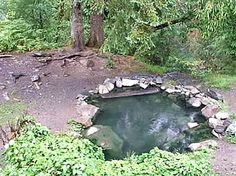

Sol Duc Hot Springs Campground has many Natural Hot Springs for adventurous hikers to explore. These out of the way Natural pits, offers romantic and privite soaks for the unskiddish.

Although idealic, these are natural holes from the ground.
Check out this cool PNW roadtrip! PNW Road Trip